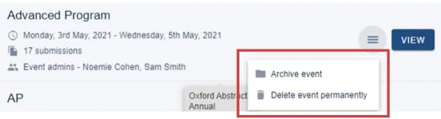
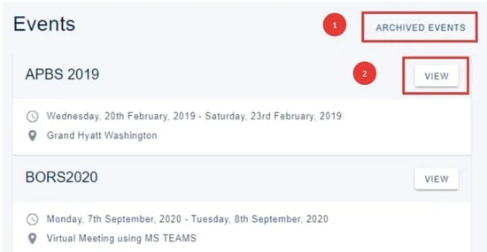
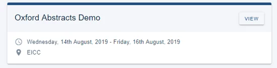
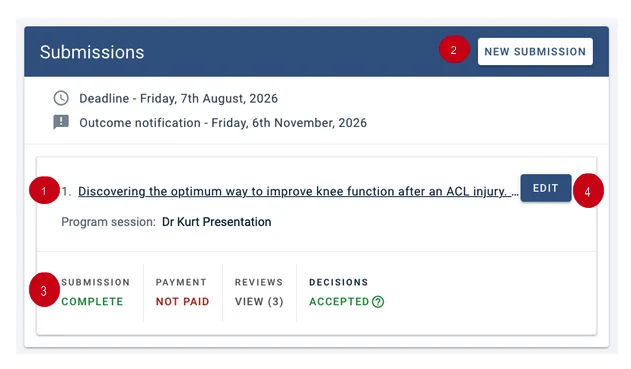
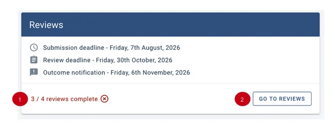
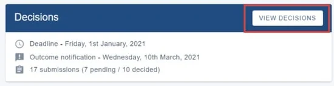
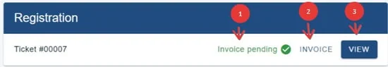

Your personal dashboard
When you log into the Oxford Abstracts app, the first screen you see is your personal dashboard, which will provide a list of all the activity your registered email is associated with.#
Skip to guidance for:
Account administrators
Event administrators
All other users
Submitters
Reviewers
Committee members
Delegates
Account administrator#
If you have been set up as an account administrator on the system, you will see a list of your accounts at the top of the screen.
In the example below, the user is an account administrator for just Oxford Abstracts. Underneath each account header will be a list of the events for that account. At the top right hand you will see:
(1) Archived account events (if there are any)
(2) Manage account

If you click on Archived account events, you will see a list of all your archived events.
Click Unarchive if you would like to restore it. It will then move to your 'active' events.

Click on (2) (above) Manage account to add event and client admins etc.
To archive or delete an event, click on the hamburger icon and select your required option.

If you choose to archive your event, all data will be retained but the event won't be visible. Deleting your event permanently will erase all data.
Clicking on View will take you to the event dashboard.
Event administrators#
If you are an event administrator, you will see a list of events that you have permissions for.
You can access Archived events (1), but you don't have permission to either archive or restore them.
Clicking the View (2) button will take you to the event dashboard.

All other users#
If you have submitted to an event, or been assigned as a reviewer, a committee member or an API user, you will also see the View button in the event panel.

Submitters#
NB: If there is a program associated with an event, you will see a View button above your submission details. Click to go straight to the program.
(1) Click on the submission title to access your submission.
(2) New submission will allow you to create another submission (if permissions allow).
(3) Shows the status of your submission.
(4) Click the pencil icon to edit your submission (if permissions allow).
If the status of your submission is incomplete, it means that you haven't completed all mandatory fields. SeeEditing a submissionfor more information.

Reviewers#
If you have been assigned as a reviewer, you will see:
(1) The status of the reviews you have been assigned.
(2) Go to reviews, which you can click to complete your review(s).

Committee members#
If you have been assigned as a committee member, you will be able to access the decisions by clicking on View decisions.

Delegates#
If you have completed a registration, you will see:
(1) The status of your registration
(2) An option to download your invoice as a pdf.
(3) A View button which you can click to access your registration.
See Guidance for delegates for more information.

Didn't solve it? Ask our support team
No question is too small, and there's no charge for asking. Raise a ticket and someone who knows the software will pick it up.
Did this page solve it?
Thanks — this helps us fix it.